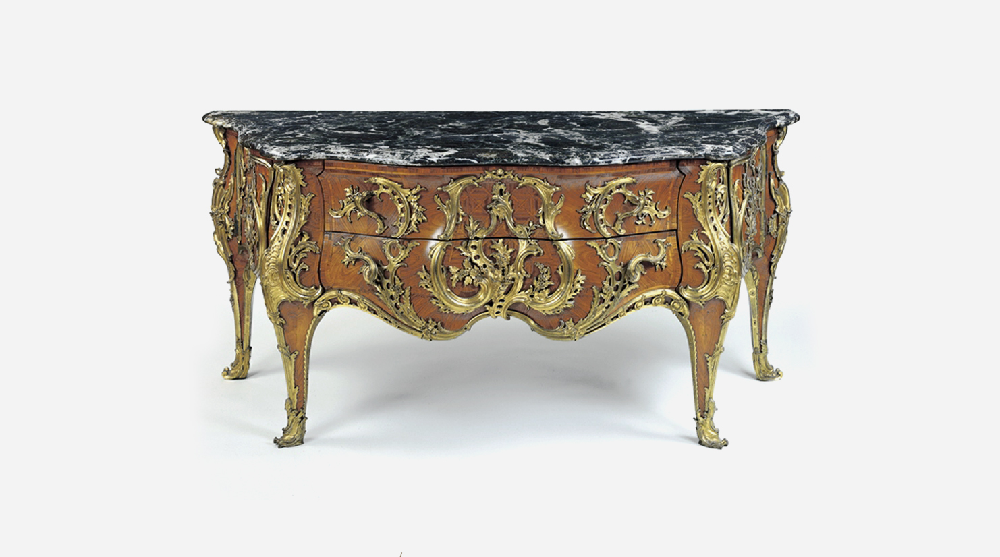

Antique Appreciation Since 1964.
The Antique Society was founded to study furniture of all periods, places and kinds, to increase knowledge and appreciation of it, and to assist in the preservation of furniture and its records.
 c. 1770 / Armchair by Michel Gourdin - France and two lines if required.New Events
21th Feb / 2015
The 39th Annual Symposium 2015
The Wallace Collection, Hertford House, Manchester Square, London, W1 Price: £45.00
26th Feb / 2015
Blythe House
14:00 at 23 Blythe Road, London W14 0QX Building on the Society's 2014 symposium on carving, this visit will explore the subject.
4th Mar / 2015
Study weekend to York and North Yorkshire
This weekend will include private visits to Newby Hall with its Adam designed tapestry room furnished by Thomas Chippendale and Norton Conyers, winners of the 2014...